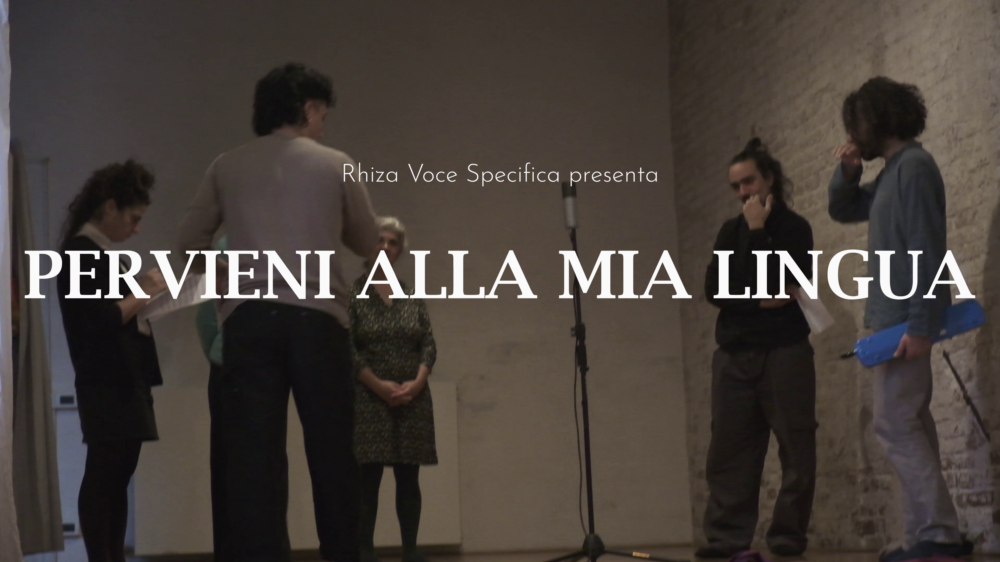
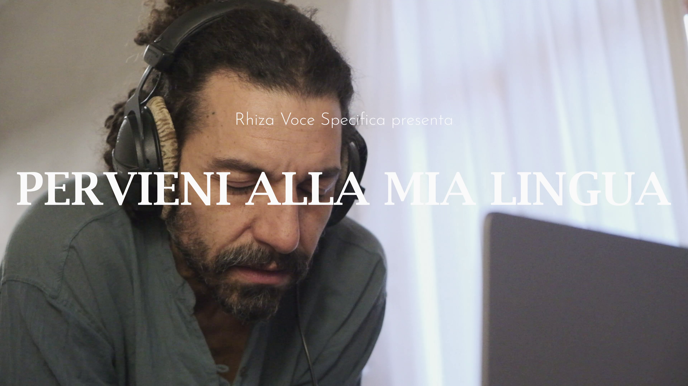

Ho avuto il piacere di partecipare alla produzione del video di questa ricerca performativa di Rhiza: voce specifica, coro diretto da Anna Maria Civico.
Ho partecipato alle riprese registrando tutta l'intro che mostra il dietro le quinte dell'esecuzione, e operando sulla camera 3 durante la performance.
Ho anche realizzato interamente il montaggio in multicam e le grafiche.
VIDEO COMPLETO _ PERVIENI ALLA MIA LINGUA